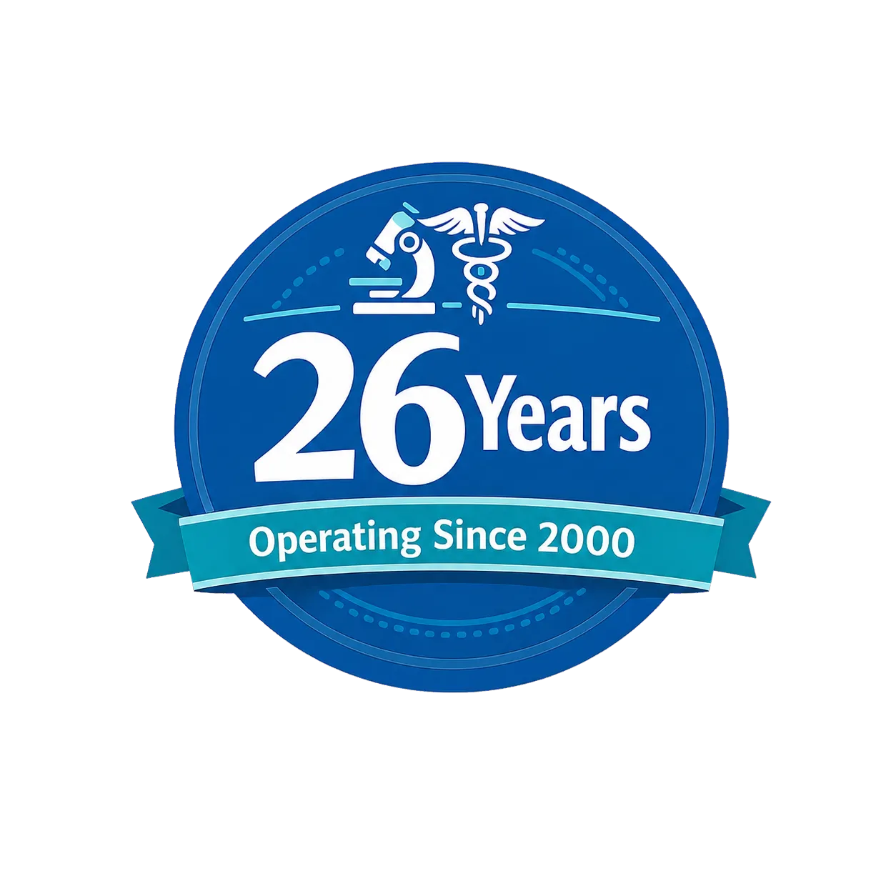
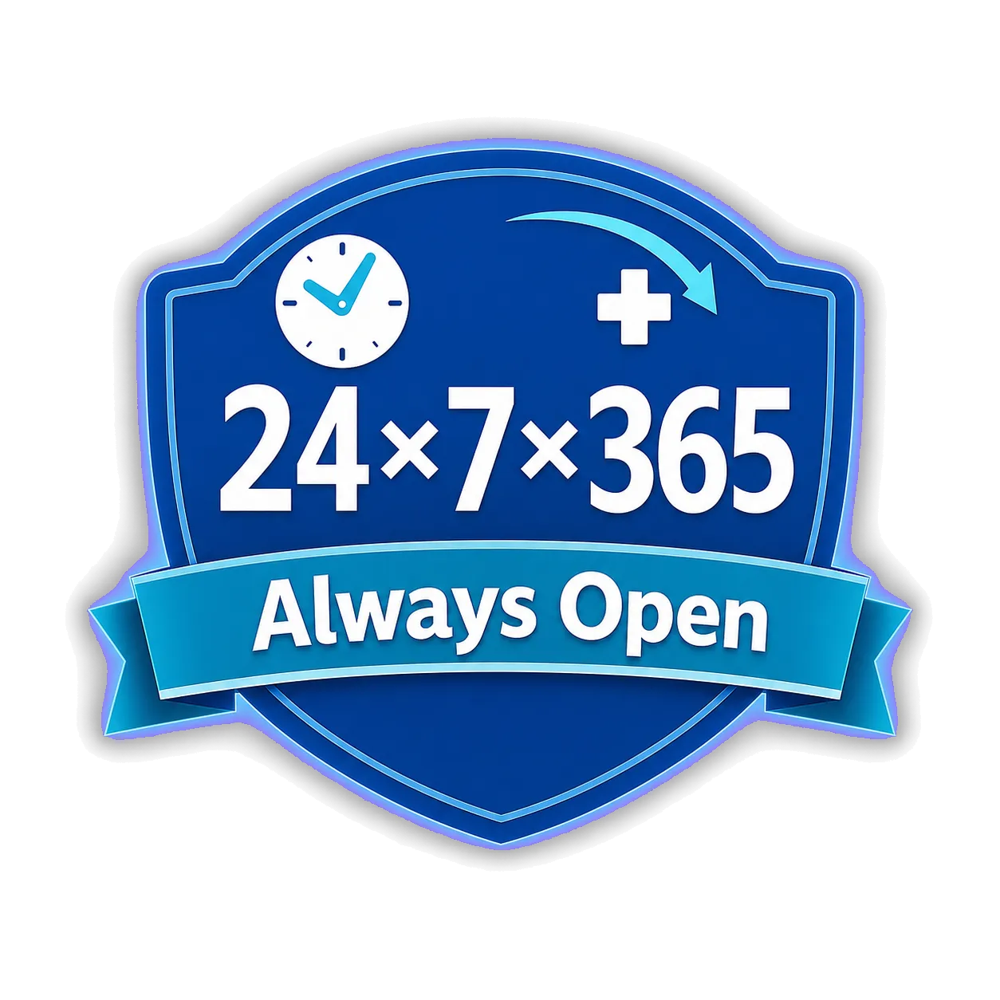
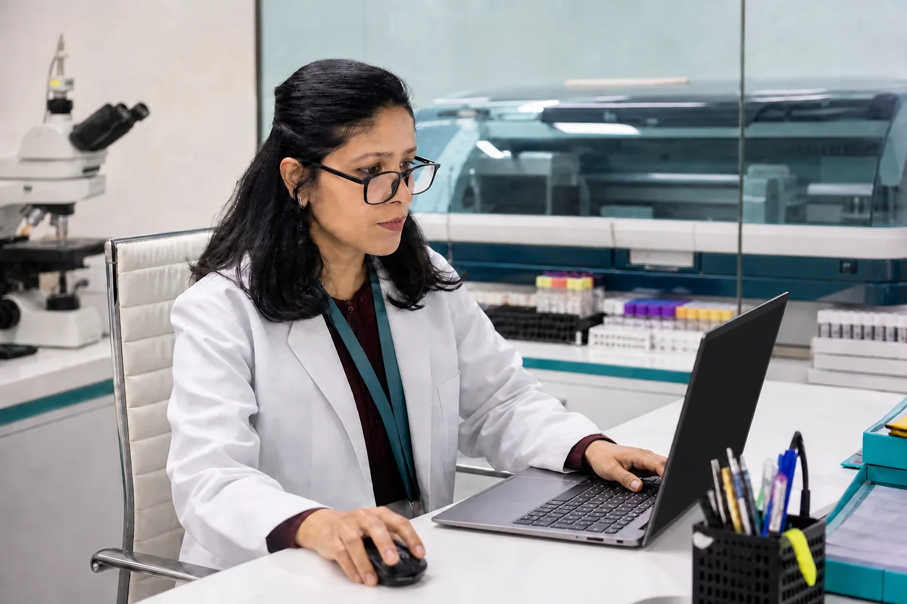
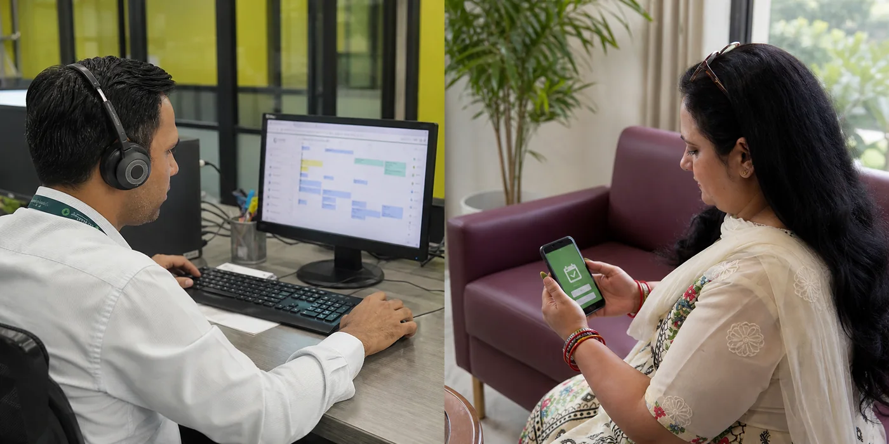
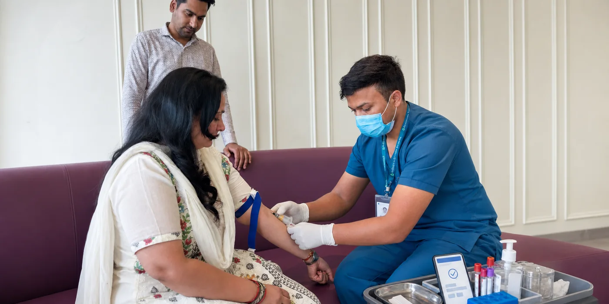
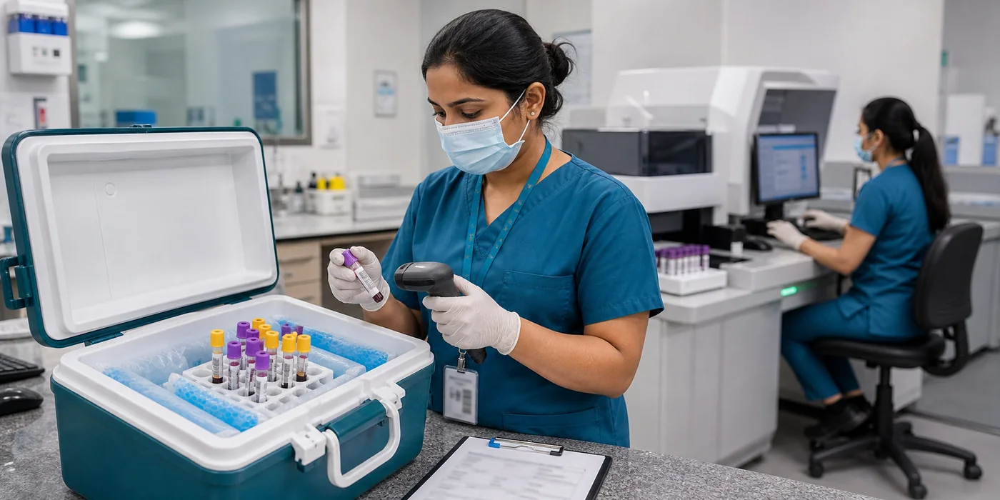
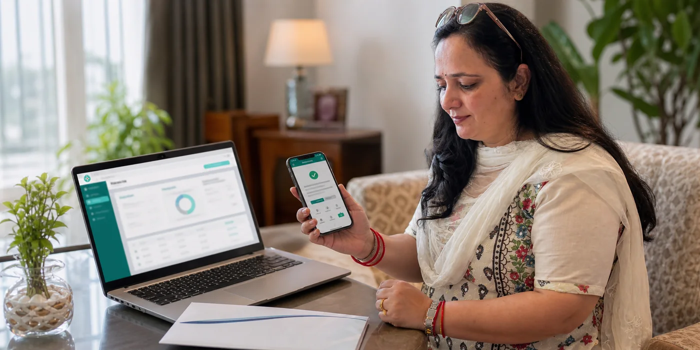

Home sample collection
30-minute booking slots from early morning to late evening, subject to availability and location.
See the complete journeyOur laboratory is medically led by qualified pathologists who oversee testing and reporting, and review every reported result.


Find the service, solution or assistance that’s right for you or someone you care for.
30-minute booking slots from early morning to late evening, subject to availability and location.
See the complete journeyVisit the GK-I laboratory at any hour. Preparation and procedure-specific availability still matter.
Plan your visitChoose a suitable level of preventive testing after understanding inclusions, preparation and clinical context.
View check-up optionsA child-friendly environment, unhurried interaction and practical support for anxious families.
For parents and childrenUnderstand what NABL accreditation means and why accreditation applies to a defined scope.
View quality informationReferral support, clinic collection, hospital laboratory management and institutional pathology partnerships.
Connect with our teamBecause good laboratory care goes beyond accurate results. It means being attentive, accessible and accountable at every step—from your first interaction to your final report & even beyond.

Our laboratory is led by qualified pathologists, with Patient First at the heart of how we test, report and make every decision.
Health can bring questions, uncertainty and anxiety. That’s why we don’t delegate your support to chatbots or AI agents—you speak to real people who listen, understand and assist with empathy.
Your need for testing does not always follow office hours & working days. Our laboratory is open 24×7×365, so you can access testing when you need it. Selected specialised collections and procedures are scheduled in advance.
Everyone’s needs are different. With empathy at the heart of our service, we offer home collection, accessible and private collection spaces, child-friendly facilities, and digital or physical report delivery—so testing can work around you.
From booking to report, we take care of every step.

or WhatsApp us with the tests you need and your preferred time. Our team confirms your appointment and guides you on any preparation required before the visit.

Your phlebotomist verifies your details, collects the sample hygienically and labels it with a barcode before it leaves your home.

Your sample is transported under the required conditions, checked when it reaches the laboratory and taken through the appropriate testing process.
Your results are reviewed and authorised by a qualified pathologist. When something needs another look, additional checks or repeat testing can be initiated before the report is released.

Receive your report directly on WhatsApp, download it anytime from our patient portal, or request a physical copy to be delivered to your home.
Our laboratory is NABL accredited to ISO 15189:2022, with all our laboratory disciplines represented within the accredited scope. Accreditation gives you an independent measure of our quality systems. For us, however, quality is a daily responsibility—the care, consistency and accountability behind every sample, every process and every report.
Accuracy is fundamental. But patients also remember how they were spoken to, how gently they were treated, whether we respected their time and whether someone was there when they needed help.
Special care during the blood test, a neat environment and a team that helped make the experience comfortable.
The blood collection felt smooth and effortless, with thoughtful support that made the visit comfortable.
Courteous staff made blood collection feel reassuring and approachable, with the convenience of round-the-clock care.
Professional home collection arrived on time, and both the appointment updates and reports were available online.
Yes. The main laboratory at S-35, Greater Kailash I is open 24x7x365. FNAC, semen analysis and certain procedures require prior scheduling.
Call or WhatsApp with the test name or prescription. The team will confirm fasting, timing, medicine-related and test-specific instructions.
The current policy does not levy a home-collection charge when the bill value exceeds ₹1,000. Location, serviceability and any applicable charge are confirmed before booking.
No. Accreditation applies only to the tests and methods listed in the laboratory's current NABL scope.
For the fastest response, call or WhatsApp the 24x7 helpline.